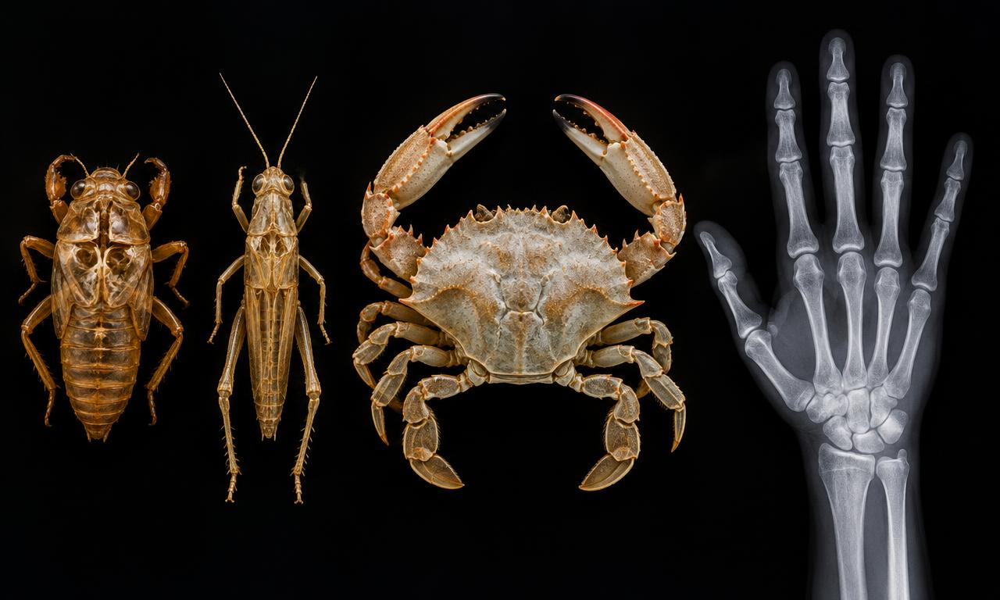
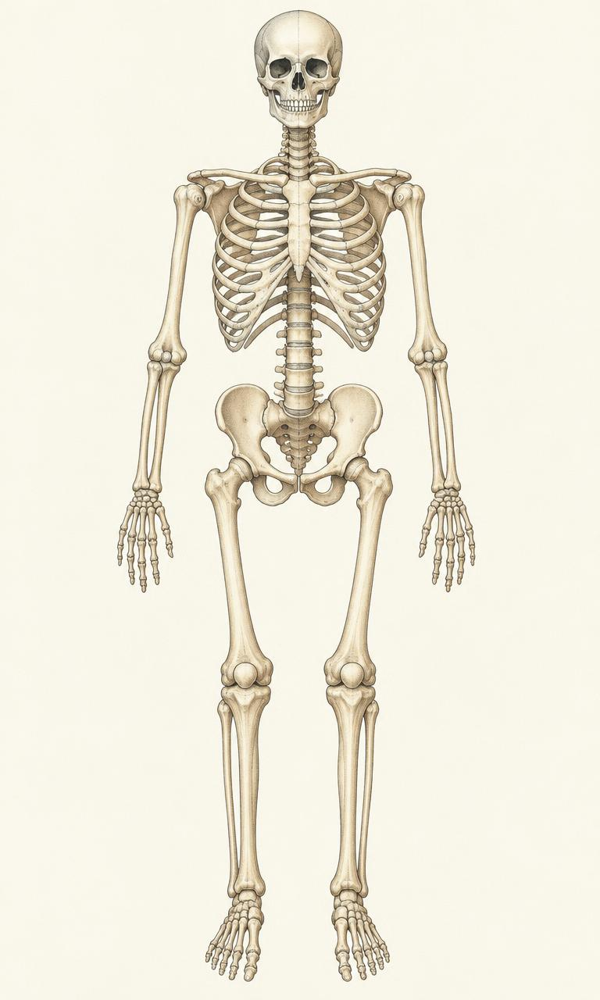
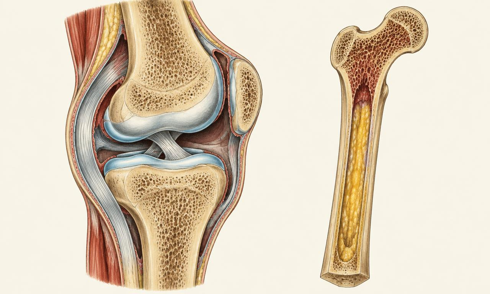
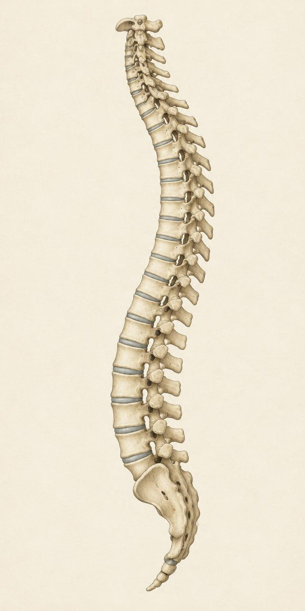
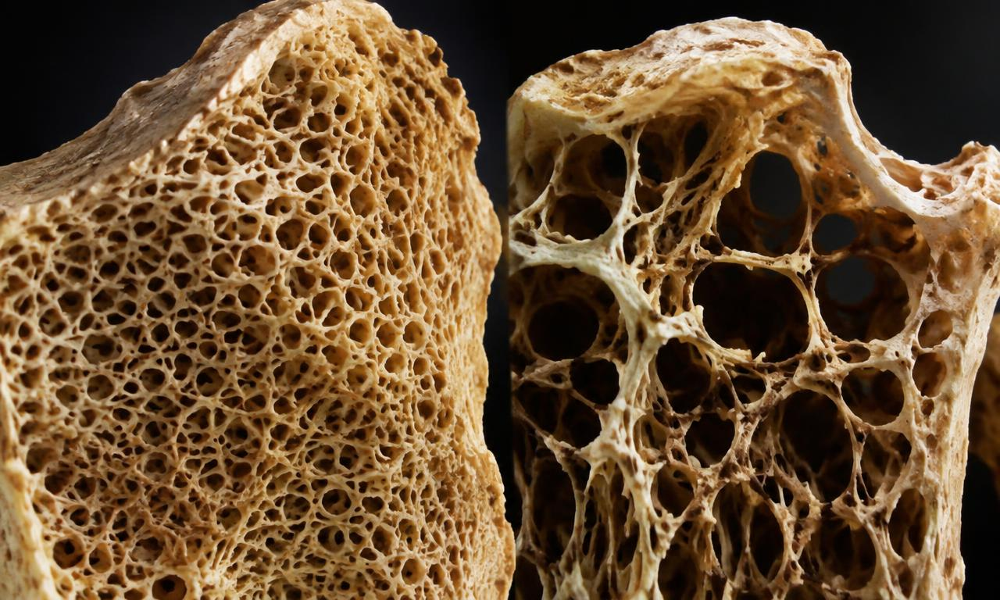
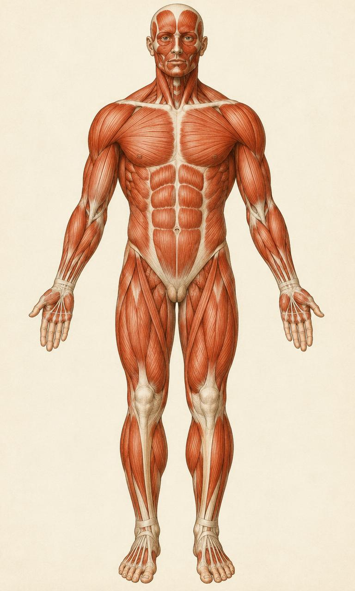

Uma viagem pela estrutura viva que sustenta, protege e move o corpo humano — a obra-prima de engenharia que o Criador nos deu.
Todo animal com corpo firme precisa de uma estrutura de sustentação. A grande pergunta é: onde ela fica?

Esqueleto externo, que reveste o corpo como uma armadura. Feito principalmente de quitina (às vezes reforçada com carbonato de cálcio). Não cresce junto com o animal, por isso ele precisa fazer muda (ecdise), trocando a carapaça.
Ex.: insetos, aranhas, caranguejos, camarões.Esqueleto interno, envolto por músculos e pele. Formado por ossos e cartilagens, tecidos vivos que crescem com o organismo e se regeneram.
Ex.: peixes, anfíbios, répteis, aves e mamíferos.O sistema musculoesquelético reúne ossos, músculos, cartilagens, tendões e ligamentos. Juntos, eles fazem muito mais do que nos manter de pé — são fábrica de sangue, cofre de minerais e escudo dos órgãos vitais.
Dá forma ao corpo e serve de apoio para os tecidos moles.
O crânio protege o encéfalo; as costelas, coração e pulmões; a coluna, a medula.
Ossos funcionam como alavancas, e os músculos como motores.
A medula óssea vermelha produz hemácias, leucócitos e plaquetas (hematopoiese).
Armazena cálcio e fósforo, liberados no sangue quando necessário.
A contração muscular gera calor e mantém a postura do corpo.

Crânio Mandíbula Clavícula Esterno Costelas Úmero Vértebras Pelve Rádio / Ulna Falanges Fêmur Patela Tíbia Fíbula Metatarsosossos no corpo de um adulto.
O recém-nascido tem cerca de 270 a 300 peças ósseas. Durante o crescimento, várias se fundem — como os ossos do crânio, do sacro e do quadril — até chegar aos 206 do adulto.
É o eixo central do corpo, com 80 ossos: crânio (incluindo os ossículos da audição), osso hioide, coluna vertebral, costelas e esterno. Protege os órgãos principais.
São os apêndices ligados ao eixo, com 126 ossos: cíngulo do membro superior (clavículas e escápulas), membros superiores, cíngulo do membro inferior (ossos do quadril) e membros inferiores. É o responsável pela maior parte da locomoção e manipulação.
Os ossos são classificados pela relação entre comprimento, largura e espessura.
Comprimento maior que largura. Ex.: fêmur, úmero, tíbia, falanges.
Dimensões parecidas, formato de cubo. Ex.: ossos do carpo e do tarso.
Finos e achatados. Ex.: parietal, esterno, escápula, costelas.
Forma complexa, sem padrão. Ex.: vértebras, mandíbula.
Desenvolvem-se dentro de tendões. Ex.: patela.
Têm cavidades com ar (seios). Ex.: frontal, maxilar, etmoide, esfenoide.
Articulação (ou junta) é o local de união entre dois ou mais ossos, ou entre osso e cartilagem. Algumas são fixas e protegem; outras são livres e permitem desde o sutil movimento de um dedo até o giro completo do ombro. Elas são classificadas em três tipos, conforme o tecido que une os ossos e o grau de movimento.

Encaixes em zigue-zague entre os ossos do crânio.
Ossos unidos por membrana fibrosa. Ex.: entre rádio e ulna, tíbia e fíbula.
Fixação do dente no alvéolo da mandíbula e maxila.
Unidas por cartilagem hialina. Ex.: disco epifisário, 1ª costela com o esterno.
Unidas por fibrocartilagem. Ex.: sínfise púbica e discos intervertebrais.
Superfícies planas que deslizam. Ex.: entre ossos do carpo.
Flexão e extensão em um eixo. Ex.: cotovelo, joelho, dedos.
Rotação em torno de um eixo. Ex.: atlas e áxis (dizer “não”), rádio e ulna.
Superfície oval em cavidade elíptica, dois eixos. Ex.: punho (radiocarpal).
Superfícies em forma de sela. Ex.: base do polegar (trapézio-metacarpo).
Movimento em todos os eixos. Ex.: ombro e quadril.
Fratura é a perda da continuidade de um osso — uma quebra total ou parcial, geralmente causada por trauma (queda, pancada, acidente) ou por fragilidade óssea (como na osteoporose).
Exame físico e raio-X (às vezes tomografia).
Recolocar os fragmentos na posição: fechada (manipulação externa) ou aberta (cirurgia).
Imobilização com gesso, tala ou órtese, ou fixação interna com placas, parafusos, pinos e hastes; ou fixador externo.
Consolidação (6 a 12 semanas, em média) e fisioterapia para recuperar força e movimento.

Pescoço. C1 é o atlas e C2 o áxis, que permitem mover a cabeça.
Região do tórax; cada vértebra se articula com um par de costelas.
As vértebras maiores e mais fortes; suportam o peso do tronco.
Fundidas no adulto, formam o osso sacro, que se liga à pelve.
3 a 5 (geralmente 4) vértebras fundidas formam o cóccix.
Total: 33 vértebras (cerca de 26 ossos no adulto, após as fusões). Suas curvas naturais — lordose cervical e lombar, cifose torácica e sacral — funcionam como molas que amortecem impactos.

É uma doença em que há perda de massa óssea e deterioração da microarquitetura do osso, que fica poroso e frágil, aumentando muito o risco de fraturas. É chamada de “doença silenciosa”, porque costuma não causar sintomas até a primeira fratura.
Quadril (colo do fêmur), vértebras (coluna), punho (extremidade do rádio) e úmero proximal.
Principalmente após os 50 anos nas mulheres (após a menopausa) e após os 65–70 anos nos homens.
Mulheres pós-menopausa (queda do estrogênio), brancas ou asiáticas, magras, com histórico familiar, sedentárias, fumantes.
Densitometria óssea (DXA), que mede a densidade mineral do osso, em especial na coluna lombar e no fêmur.
Leite e derivados, vegetais verde-escuros, gergelim, feijão, tofu.
Exposição moderada ao sol diariamente; ela ajuda a absorver o cálcio.
Atividades com impacto e força (caminhada, corrida, musculação) estimulam o osso.
Não fumar, evitar álcool e excesso de cafeína e sal; prevenir quedas em idosos.
Cerca de 600 músculos, quase 40% do peso corporal. São estriados, de contração voluntária e presos aos ossos por tendões.
Puxam os ossos, gerando locomoção, expressões faciais, fala e respiração.
Contrações contínuas mantêm o corpo ereto e estável.
Reforçam as articulações, junto com tendões e ligamentos.
Produzem até 85% do calor corporal (o tremor de frio é isso!).
Protegem órgãos do abdome e ajudam o sangue venoso a voltar ao coração.

Trapézio Deltoide Peitoral maior Bíceps Serrátil anterior Reto abdominal Quadríceps Gastrocnêmio Sóleo| Músculo | Onde fica · o que faz |
|---|---|
| Trapézio | Parte superior das costas e nuca. Eleva e retrai os ombros, estende a cabeça. |
| Deltoide | Recobre o ombro. Eleva (abduz) o braço. |
| Peitoral maior | Peito. Aproxima e roda o braço para dentro (ex.: abraçar, empurrar). |
| Bíceps braquial | Frente do braço. Flexiona o cotovelo e gira o antebraço. |
| Tríceps braquial | Parte de trás do braço. Estende o cotovelo. |
| Reto abdominal | Frente do abdome (“tanquinho”). Flexiona o tronco e protege vísceras. |
| Serrátil anterior | Lateral das costelas, em forma de serra. Projeta a escápula para frente (socar). |
| Grande dorsal | Lateral e parte inferior das costas, o mais largo. Puxa o braço para baixo e para trás (remar, escalar). |
| Glúteo máximo | Nádegas, o mais volumoso do corpo. Estende o quadril (subir escadas, levantar). |
| Quadríceps | Frente da coxa, com 4 cabeças. Estende o joelho (chutar, levantar). |
| Gastrocnêmio | Panturrilha superficial (“batata da perna”). Fica na ponta dos pés e flexiona o joelho. |
| Sóleo | Abaixo do gastrocnêmio. Flexão plantar, essencial para ficar em pé e caminhar. |
Tríceps, grande dorsal e glúteo máximo ficam na face posterior do corpo. Gastrocnêmio e sóleo se unem no tendão calcâneo (de Aquiles), o mais forte do corpo.
A teoria dos filamentos deslizantes: actina e miosina deslizam umas sobre as outras e encurtam o sarcômero, a unidade contrátil da fibra muscular.
Linhas Z (brancas) · actina (azul, fina) · miosina (vermelha, grossa)
O cérebro envia um impulso nervoso pelo neurônio motor até a junção neuromuscular.
O neurônio libera acetilcolina, que gera um potencial de ação na membrana da fibra muscular.
O sinal chega ao retículo sarcoplasmático, que libera íons cálcio (Ca²⁺).
O cálcio se liga à troponina, que desloca a tropomiosina e expõe os sítios de ligação da actina.
As cabeças de miosina, energizadas pelo ATP, se prendem à actina formando pontes cruzadas e a puxam para o centro.
Os filamentos deslizam, o sarcômero encurta e o músculo contrai. Quando o estímulo cessa, o cálcio é recaptado e o músculo relaxa.
Proporcionalmente ao peso, o osso é mais resistente que o aço; o fêmur suporta mais de uma tonelada de carga.
Osteoclastos destroem e osteoblastos reconstroem o osso o tempo todo: o esqueleto se renova a cada ~10 anos.
O hioide, no pescoço, é o único osso que não se articula com nenhum outro.
Os músculos dos olhos são os mais ativos: movem-se mais de 100 mil vezes por dia.
Acordamos até 1 cm mais altos, pois os discos intervertebrais se reidratam durante o sono.
Usamos mais de 40 músculos faciais para expressar emoções.
“Eu te louvo porque me fizeste de modo especial e admirável. Tuas obras são maravilhosas! Digo isso com convicção.”Salmos 139:14